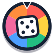

Wheel
Dice
Selected
Spin again
×
Batch complete
×
+ Add option
Weighted
Input sets
1
2
3
4
5
Preset
Select
Yes / No
Yes / No / Maybe
Heads / Tails
Rock / Paper / Scissors
What to eat?
Who goes first?
SPIN
More Options
Statistical Mode
Animated batch (2–12)
Run animated
Instant batch
Run instant
← Back to wheel
Distribution
Reset
Export CSV
Dice mode
Standard
Catan
Count
Modifier
added to total
Roll
Totals distribution
Reset
Players
2
3
4
5
6
Slightly loaded dice
Seconds per settlement
Start game
Current turn:
Roll
Recent rolls
Expand analytics ▸
New game
A quiet moment
A verse for right now
Bible version
Another verse
Done
Catan Analytics
Roll histogram
Full log
Place settlements
Done — next player